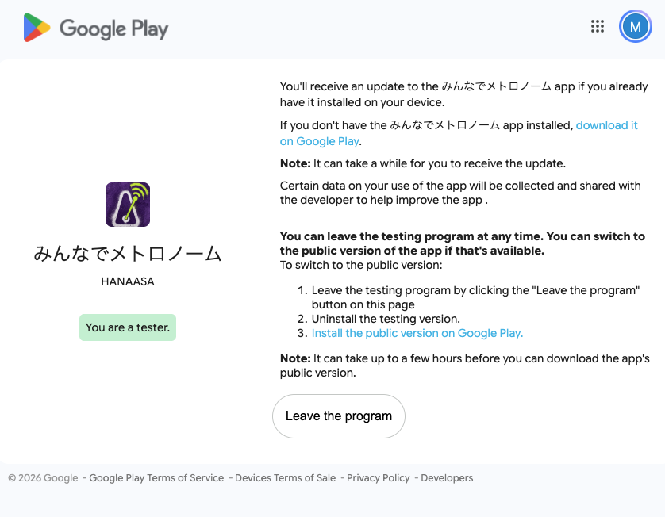
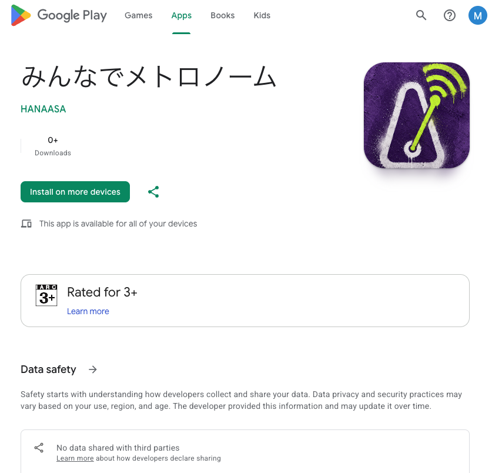
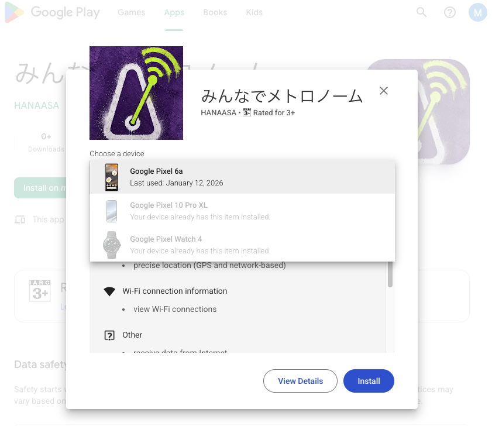
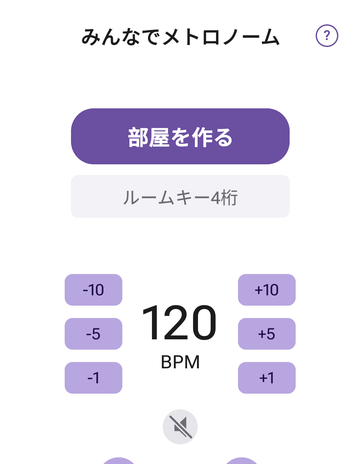
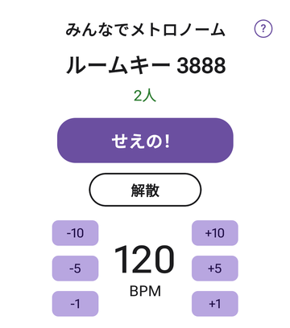
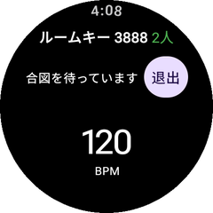
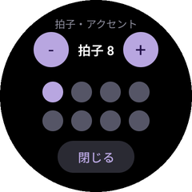
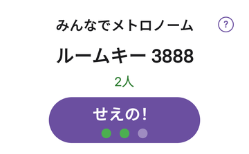
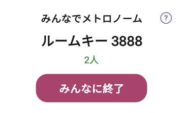

まず試してほしいこと
1人が「部屋を作る」
ほかの人が4桁のルームキーで参加
部屋を作った人が「せえの！」
「みんなに終了」 で止めて、BPMを変えてもう一度「せえの！」 「退出」 （部屋を作った人は「解散」 ）
スマホに入れる
Watchに入れる
使い方
困ったときは
これは何？
離れていても、みんなで同じテンポを一緒に感じる ためのメトロノームです。
いちばんの特徴は、複数の人の端末が、同じ瞬間に一緒に刻む こと。
連弾やアンサンブルで出だしを合わせたい時のために作りました。
振動（バイブ）でテンポを刻みます。 最初は音が出ないので、演奏の邪魔になりませんスマートウォッチなら、手首で直接テンポを感じられます
インターネット経由なので、離れた場所にいても一緒に使えます
iPhone と Android、どちらでも参加できます
準備する
お持ちの機種によって、入れるものが変わります。
お使いのものが最新版か、確かめてください。
古いままだと、直したはずの不具合がそのまま残っています。
使うもの 最新版 入れ直し方 Android スマホ 84 このリンク から開いて「更新」（検索では出てきません ）Android のスマートウォッチ 85 パソコン・iPhone・iPad のブラウザ から（手順を見る ）。Android スマホからは出てきません（バグっぽいです）
いま入っている版の見かた：
スマホは、画面の右上の ? を押すと出る窓の「アプリ」の欄に 1.0 (84) のように出ています。
自動で更新されるまで時間がかかることがあります。見つけたらビシッと「更新」を押してください。
Android の方へ：先にメールアドレスをご連絡ください 登録された Google アカウントからしかインストールできません 。
下のリンクを開いても「このテストに参加できません」と出る場合は、まだ登録されていません。
ふだん Play ストアで使っている Google アカウントのメールアドレス をご連絡ください。
登録すると入れられるようになります（反映まで数分〜数十分かかることがあります）。
いまの配信状況
スマホ版：インストール可能です。 ウォッチ版：インストール可能です。 ただし
Android のスマホからだと、デバイスの一覧にウォッチが出てこないこと があります（バグっぽいです）。
その場合はパソコンや iPhone から入れる方法 をご覧ください（数分で入ります）。
アプリ名に「内部用」と出ている方だけ、下の手順をお願いします。
リンクを開いたときに「みんなでメトロノーム（内部用 早期アクセス）」と表示された場合です。そのままインストールできます （この欄は読み飛ばしてください）。
下の「Google Play で入れる」を開いて、「テスターになる」を押す いま入っているアプリは、まだ消さないでください
そのまま待つ （1時間ほどかかることがあります）Play ストアでアプリの名前を見る「みんなでメトロノーム（内部用 早期アクセス）」→ まだです。もう少し待ってください
切り替わったら「更新 」を押す「インストールできません」と出たら、一度アンインストール してから、そのままインストール してください
Wear OS の時計に入れるときは、パソコン・iPhone・iPad のブラウザから
Android のスマホからだと、インストール先を選ぶ一覧に
ウォッチが出てこない ことがあります。
パソコンか iPhone / iPad のブラウザからなら、確実に入れられます。
Android スマホしかお持ちでない方も、パソコンがあれば大丈夫です。
パソコン / iPhone / iPad のブラウザで、下のページを開くGoogle Play のページを開く テスター登録ができていれば、オプトインのページは「You are a tester.（あなたはテスターです）」と表示されます

この表示が出ていればOKです
時計と同じ Google アカウントでログインしているか を確認する画面の右上のアイコンで確認できます そのページにある
「If you don't have the みんなでメトロノーム app installed,
download it on Google Play 」の
download it on Google Play をタップ！ 「Install on more devices （他のデバイスにインストール）」を押す

この緑のボタンです
「Choose a device （デバイスを選択）」からお使いの時計 を選ぶ

時計（Pixel Watch など）を選びます。
「Install 」を押す
数分待つ と、時計にアプリが入ります
すでに入っている端末には「Your device already has this item installed」と出ます。
これは「入っています」という意味なので、そのままで大丈夫です。
Android
スマホに入れる
Android スマホにアプリを入れれば、それだけで参加できます。
Google Play で入れる
上のボタンを開いて、「テスターになる 」を押す「あなたはテスターです」と出れば登録完了
そのページの「Google Play でダウンロード 」を開く
「インストール 」を押す
アプリを開いて、右上の ? を押した窓に 1.0 (84) と出ていれば最新
先にメールアドレスの登録が必要です （上の案内を見てください）。1時間ほどかかることがあります 。
すぐ入れられなくても、少し時間をおいてください。スマホと時計で同じ Google アカウント にしてください。別のアカウントだと、いつまでも入れられません。
Pixel Watch などの Wear OS
Watch（Wear OS）に入れる
Wear OS の時計は、時計だけでも参加できます 。
スマホを持っていなくても大丈夫です。
文字盤に登録できます（コンプリケーション）。
いま設定している BPM が文字盤に出て、タップするとすぐアプリが開きます。
Google Play で入れる
スマホ版と同じ、このリンク1つでOKです。 時計用の別のリンクはありません。
時計に入れるときは、パソコン（または iPhone / iPad）のブラウザから入れてください。
Android のスマホからだと、インストール先を選ぶ一覧にウォッチが出てきません （バグっぽいです）。
故障ではなく、Google Play 側の仕様です。→ パソコンから入れる手順を見る
上のボタンから「テスターになる 」を押す（まだの方だけ）
パソコンのブラウザから時計にインストール
※時計とスマホは同じ Google アカウント にしてください。時計の Play ストアで検索しても出てきません 。
Wear OS の時計について
入れられない時計もあります Huawei （HarmonyOS / LiteOS）、Garmin 、Fitbit などは
Wear OS ではないため、アプリを入れられません。スマホだけでも問題なく参加できます 。
手首で感じることはできませんが、合図もテンポも同じように届きます。
お使いの時計が対象外でも、ぜひスマホで試してみてください。
使ってみる
1人が「部屋を作る」
アプリを開きます
「部屋を作る」 を押します4桁の数字（ルームキー）が表示されます。例：3888
この数字を、一緒に演奏する人に伝えます（口頭でも、メッセージでも）

スマホの最初の画面 
部屋を作った人の画面（ルームキーと人数） ほかの人が参加する
アプリを開きます
スマホは「ルームキー4桁」 の欄に、時計は「参加」 を押してから、教えてもらった数字を入れます
4桁を入れ終わると、そのまま部屋に入ります
入れると、ルームキーの横（下）に 2人 のように人数が表示されます

Watchで参加した人の画面
つながると いま何人いるか が表示されます（部屋を作った人を含めた人数です）。
ここが増えていれば、ちゃんとつながっています。
iPhone・Apple Watch の人とも、同じ部屋に入れます。
テンポを決める
テンポと拍子は、部屋を作った人が決めます 。
参加した人の画面には、いまのテンポ（BPM の数字）だけが表示されます。
BPM … 数字の左右にある -10 -5 -1 +1 +5 +10 で 40 から 240 まで 変えられます拍子 … − ＋ で1〜8拍に変えられます。時計は「拍子・アクセント」 を押すと、変える画面が開きます強弱（アクセント） … 拍の数だけ丸が並びます。丸をタップすると、色が順に変わります
紫 … その拍を強く 鳴らす（アクセント）グレー … ふつうに鳴らす薄いグレー … 鳴らさない （その拍は休み）
時計の拍子・アクセント … 「拍子・アクセント」の画面で、−＋と丸をそのまま押して変えます。終わったら「閉じる」

Watchの「拍子・アクセント」の画面 音（スマホのみ） … BPM の数字の下にあるスピーカーのボタンで、拍の音を鳴らすかどうかを切り替えます（最初はオフ＝振動だけ）
みんなで鳴らしている間は、テンポと拍子を変えられません。
変えたい時は、いったん「みんなに終了」で止めてから変えて、もう一度合図を出してください。
ひとりで使う時は、鳴らしている最中でも変えられます。
合図を出す
部屋を作った人が 「せえの！」 を押します（参加した人の画面には「合図を待っています」と出ます）
全員の端末に 「たん、たん、たたん」 と振動が来て、画面の灯が1つずつ点きます
最後の「たん」のあと、そのままテンポが始まります

合図中は、振動に合わせて灯が1つずつ点きます
この合図は全員に同時に届きます 。
自分の端末だけで確認したい時は「ひとりでメトロノーム」の
Start （合図なしですぐ始まる）か
合図つき （「せえの！」の合図を挟んでから始まる）を使ってください。
時計では、少し下へ動かすと出てきます。
止める
鳴っている間は、部屋を作った人のボタンが 「みんなに終了」 に変わります。押すと全員が止まります。

鳴っている間（部屋を作った人） 部屋から抜ける時は、部屋を作った人は 「解散」 、参加した人は 「退出」 を押してください（部屋を作った人の「解散」は、止めた後に出ます）。
抜けた後は「解散しました」「退出しました」と出ます。部屋を作った人が抜けると、参加していた人の画面には「ルームが終了しました」と出ます。
困ったときは
アプリ右上の ? からお問い合わせできます。 端末やアプリの情報が自動で入るので、そのまま送ってください。
こうなった こうしてみる
音も鳴らしたい
スマホは、BPM の数字の下にあるスピーカーのボタンを押してください（最初はオフ）。時計は振動だけです。
Play のリンクを開くと「テストに参加できません」と出る
そのメールアドレスがまだ登録されていません。Play ストアで使っている Google アカウントのメールアドレスをご連絡ください。登録後、反映まで数分〜数十分かかることがあります。
つながらない
4桁の数字が合っているか確認してください。両方ともインターネットにつながっている必要があります（Wi-Fi かモバイル通信）。
時計が振動しない
時計でアプリを開いたままにしてください。 文字盤に戻っていると届かないことがあります。
時計で、手首を下ろすと止まる
最新版が入っているか確認してください。 古い版には、手首を下ろしても鳴り続ける仕組みが入っていません。
人数が増えない
数秒待つと正しい人数になります。それでも変わらない時は、一度部屋を出て（「解散」または「退出」）から入り直してください。
合図がずれる・遅れる
電波の状態によって遅れることがあります。場所を変えるか、Wi-Fi につないでみてください。
25分たったら止まった
鳴らしっぱなしを防ぐため、25分で自動で止まり「25分経ちました」と出ます。ひとりの時は「続ける」で再開できます。部屋の中では「閉じる」を押して、もう一度合図を出してください。
文字盤のBPMをタップしてもアプリが開かない
文字盤を一度別のものに切り替えて、また戻して ください。アプリを入れ直した直後に起きることがあります。BPMの数字が出ているのにタップだけ効かない場合も、これで直ります。
振動が弱い / 気づかない
端末の設定でバイブレーションの強さを上げてください。時計は手首に密着させるとよく伝わります。
いま試してもらっていること
このアプリはまだテスト中です。使ってみて、こんなことを教えてもらえると助かります。
合図がちゃんと揃って感じられたか
振動の強さ・長さはちょうどいいか
「せえの！」の合図の長さは、待たされすぎないか／短すぎないか
操作に迷ったところ
うまく動かなかった場面（その時の機種と状況）
うまく動かなかったときは
選ぶだけで報告できるフォームを用意しました。文字入力は必要ありません。
スクショや画面録画も添付できます。
報告する
スマホのアプリの右上にある ? から送ると、端末やアプリの情報が自動で入ります。
そちらからのほうが、原因を早く見つけられます。
スマートウォッチをお持ちの方は、特にこの2つを見てください。
手首を下ろしたまま演奏していて、鳴り続けたか （途中で止まったら、その時の状況も）文字盤に戻った時に、止まってしまわないか （起きた回数や頻度を教えてください）
お願い：テスターの登録は 14 日間そのままにしてください 🙏
正式に公開するために、Google から
「14 日間つづけてテスターがいること」 という条件が出ています。
「テスターの登録をやめる（Leave the program）」は押さないでください アプリを消してしまっても、登録さえ残っていれば大丈夫 です
期間中に一度でも触っていただけると、とても助かります